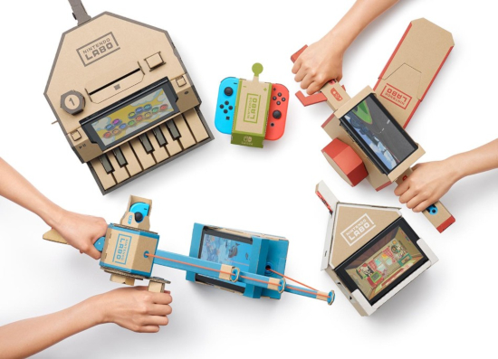
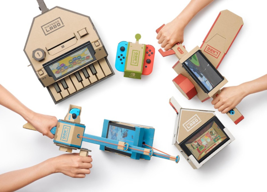

Hablemos de plataformas
¿QUÉ SON?
Esto que ves aquí son actualmente las tres mayores compañias de entretenimiento en relación a los videojuegos(obviamente despues del pc ;) ) .
En esta sección hablaremos un poco sobre cada una de estas plataformas, diferencias como juegos exclusivos, ventajas y similitudes entre ellas.
Nintendo Switch
Para iniciar esta pequeña guia sobre plataformas, comenzaremos con la que tiene menor repercusión en el sector pero no obtante con la desaparición de las "antiguas nintendo portables" ha cogido carrerilla y va abriendose un hueco en este sector bastante monopolizado.
De ella cabe resaltar por su versatilidad, puedes añadirle diferentes tipos de mandos(que recuerdan a los de la antigua wii), titulos unicos y de gran peso com SuperMario, Pokemon o Zelda, además una función que cadece la competencia y es que es portable, la puedes llevar donde quieras ¿No es fantástico?
Características técnicas a nivel de hardware en Nintendo Switch:
-
Tamaño: 102mm x 239mm x 13,9 mm con los Joy-Con acoplados.
-
Peso: 297 g (398 g con los Joy-Con).
-
CPU/GPU: Procesador NVIDIA Tegra X1 personalizado
-
Memoria: 4 GB de RAM
-
Almacenamiento: 3 2GB.
-
Prestaciones de comunicación: LAN inalámbrico (también por cable en modo TV)/Bluetooth 4.1.
-
Salida de vídeo: 1920x1080, 60fps (EN modo TV a través de cable HDMI).
-
Salida de audio: Compatible con PCM lineal 5.1 (en modo TV a través de cable HDMI).
-
Altavoces: Estéreo.
-
Terminal USB: Type-C (para cargar o conectar a la base).
-
Conector de micrófono y auriculares: Salida estéreo.
-
Ranura de tarjetas de juego: Sólo compatible con tarjetas de Switch.
-
Ranura de tarjetas microSD: Compatible con microSD, microSDHC y microSDXC (con actualización) de hasta 2 TB.
-
Sensores: Acelerómetro, giroscopio y sensor de brillo.
-
Condiciones ambientales: Temperatura 5-35ºC/Humedad 20-80%.
-
Batería interna: Batería de ion de litio con capacidad 4310 mAH no extraíble
-
Duración de la batería: Entre 3 y 6 horas dependiendo del uso de Nintendo Switch.
-
Tiempo de carga: 3 horas aproximadamente en modo espera.
 
XboX One
El principal reclamo de la consola a nivel técnico es la posibilidad de ofrecer tanto juegos como otros contenidos en 4K nativos. De hecho, otra de las cosas que se han confirmado es que por primera vez podremos emitir partidas en 4K a través de Mixer, la aplicación de streaming propia de Microsoft.
Los juegos ya existentes en Xbox One también podrán beneficiarse de la mayor potencia de Xbox One X con mejores texturas, framerates y tiempos de carga más rápidos. Es decir: para sacarle el mayor partido a la Xbox One X será necesario contar con un televisor 4K, de eso no cabe ninguna duda, pero incluso aquellos que no tengan uno podrán experimentar mejoras en los juegos con respecto a la Xbox One.
De hecho se ha confirmado que 'Gears of War 4', 'Forza Horizon 3', 'Minecraft', 'Resident Evil 7', 'Final Fantasy 15', 'Tom Clancy’s Ghost Recon Wildlands’, 'Rocket League' y otro buen montón de juegos de Xbox One recibirán actualizaciones gratuitas para aprovechar la potencia de la Xbox One X. Algunos serán mejorados para ejecutarse en 4K nativos y muchos de ellos estarán disponibles el mismo día de lanzamiento de la consola.
Recordemos una cosa: la Xbox One X no tendrá juegos exclusivos, sino que todos podrán ser jugados en cualquier consola de la familia Xbox One (Xbox One, Xbox One S y Xbox One X). La diferencia es que los nuevos juegos le sacarán todo el provecho que puedan a la Scorpio y los ya existentes podrán lucir mejor en términos generales.
Lo mismo sucede con los accesorios: todos los de Xbox One podrán ser usados en Xbox One X.
Y una última cosa sobre esto: Microsoft ha anunciado que los juegos de la Xbox original también llegarán como retrocompatibles a la familia Xbox One. El primero de ellos será 'Crimson Skies', que llegará este mismo año.
|
XBOX SCORPIO |
XBOX ONE |
|
|---|---|---|
|
CPU |
Ocho núcleos X86 a medida a 2.3GHz |
Ocho núcleos Jaguar a medida a 1.75GHz |
|
GPU |
40 unidades de computación a medida a 1172MHz |
12 unidades de computación GCN a 853 MHz (Xbox One S: 914 MHz) |
|
Memoria RAM |
12 GB GDDR5 |
8 GB DDR3/ 32 MB ESRAM |
|
Ancho de banda |
326 GB/s |
DDR3: 68 GB/s, ESRAM máx. 204 GB/s (Xbox One S: 219 GB/s) |
|
Disco Duro |
1 TB 2.5 pulgadas |
500 GB / 1 TB / 2 TB 2.5 pulgadas |
|
Unidad óptica |
4K UHD Blu-ray |
Blu-ray (Xbox One S: 4K UHD) |
Playstation 4
La pulseada está: Ps4 vs Xbox es una batalla de años y que seguirá generando muchos debates. Pero lo cierto es que más allá de la comparación entre ellas, cada consola cuenta con características específicas diferentes.
El enfoque de Sony con su Ps4 es hacer una sola cosa y hacerla realmente bien. Jugar es el objetivo y la experiencia será lo más amena posible aunque tenga más dificultad para hacer otras cosas, como usar aplicaciones o mirar televisión.
Los juegos para Playstation se encuentran entre los mejores de su generación y en 2018 hay novedades interesantes. Esta consola cuenta con títulos como Monster Hunter, Doom, Resident Evil 7, Shovel Knight, Inside y Rocket League. Claramente, gana la batalla de la exclusividad frente a la Xbox con una propuesta diversa de juegos AAA. Pero, además, de la Ps4 vale la pena destacar su apuesta por la realidad virtual.
La Ps4 Pro claramente es una evolución desde el modelo anterior y la relación precio calidad se encuentra muy bien. Las mejoras se dan especialmente en cuanto a potencia gráfica. Además, posee pequeños cambios en diseño: la nueva consola es más grande y separa los botones que generaban problema. Si no tenés una consola de última generación, ésta es claramente la más potente. Si ya tenés tu consola, no es necesario cambiarla.
|
PS4 |
PS4 (2016) |
PS4 PRO |
|
|---|---|---|---|
|
PROCESADOR |
CPU: AMD "Jaguar", 8 núcleos. |
CPU: AMD "Jaguar", 8 núcleos. |
CPU: AMD "Jaguar", 8 núcleos. |
|
MEMORIA RAM |
8GB GDDR5 |
8GB GDDR5 |
8GB GDDR5 |
|
ALMACENAMIENTO |
500GB, 1TB |
500GB, 1TB |
1TB |
|
DIMENSIONES |
275 x 53 x 305 mm |
265 x 39 x 288 mm |
295 x 55 x 327 mm |
|
PESO |
2,8 kg |
2,1 kg |
3,3 kg |
|
LECTOR ÓPTICO |
DVD y BD |
DVD y BD |
DVD y BD |
|
ENTRADA / SALIDA |
2 puertos USB 3.0 |
2 puertos USB 3.1 |
3 puertos USB 3.1 |
|
CONECTIVIDAD |
Ethernet, Wifi n, Bluetooth 2.1 |
Ethernet, Wifi ac, Bluetooth 4.0 |
Ethernet, Wifi ac, Bluetooth 4.0 (LE) |
|
CONSUMO DE POTENCIA |
250W max |
165W max |
310W max |
|
SALIDA AV |
Puerto HDMI (HDR soportado) |
Puerto HDMI (HDR soportado) |
Puerto HDMI (4K y HDR soportado) |
|
PRECIO LANZAMIENTO |
399 euros (500GB) |
299 euros (500GB) |
399 euros (1TB) |